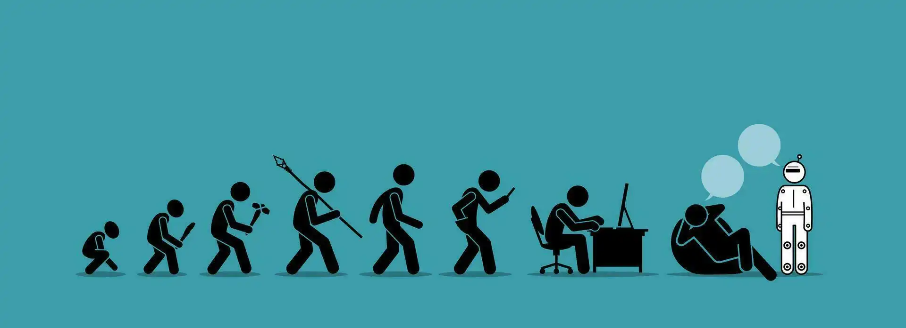
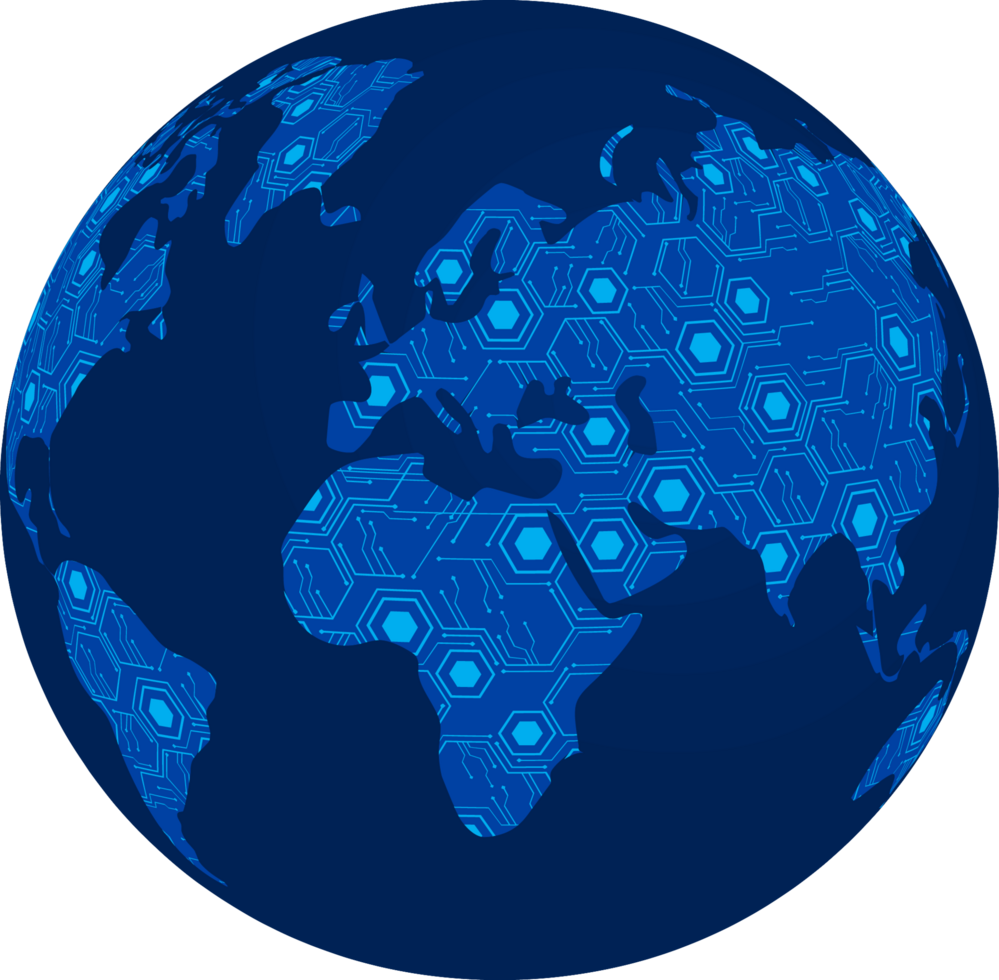

A história da humanidade confunde-se, em sua essência, com a própria evolução das ferramentas que fomos capazes de conceber. Desde o instante em que nossos ancestrais mais remotos moldaram os primeiros pedriscos lascados para a caça ou aprenderam a dominar e replicar as chamas para se proteger do frio e cozinhar alimentos, a tecnologia deixou de ser um mero artefato acidental de sobrevivência. Ela se transformou na força motriz da nossa civilização, funcionando como uma extensão da anatomia humana e permitindo que nossa espécie deixasse de apenas se adaptar passivamente ao meio ambiente para passar a moldar ativamente o próprio planeta.
A evolução tecnológica ultrapassa imensamente o simples surgimento de novos eletrônicos ou engenhocas do cotidiano; ela representa um fluxo exponencial e contínuo de inovação que reconfigura estruturas sociais, transforma linguagens culturais e expande sistematicamente as fronteiras da imaginação humana. Enquanto a humanidade necessitou de milênios para transitar do ritmo lento da Idade da Pedra para a complexidade da Idade do Bronze, o mundo contemporâneo vivencia transformações profundas em intervalos de poucas décadas — ou até anos. Pela primeira vez na história, uma única geração é capaz de testemunhar, utilizar e descartar múltiplas revoluções tecnológicas ao longo da vida.
Despertar ao som do alarme inteligente no celular, solicitar a refeição do dia por meio de um aplicativo de entregas, consumir entretenimento via streaming em alta definição e gerir toda a sua vida financeira sem jamais pisar em uma agência bancária tornaram-se gestos quase instintivos. A tecnologia impregnou-se de tal forma nos tecidos da nossa rotina que processos antes morosos, burocráticos e desgastantes foram comprimidos em breves interações sobre uma superfície plana de vidro. Ela alcançou o estágio mais avançado do design e da utilidade: tornou-se plenamente invisível justamente por ter se tornado absolutamente indispensável.

Graças à infraestrutura global da internet e ao poder amplificador das redes sociais, barreiras geográficas e linguísticas que antes isolavam povos foram virtualmente dissolvidas. Hoje, indivíduos de origens e culturas drasticamente opostas consomem, debatem e reproduzem exatamente os mesmos conteúdos, hábitos de consumo e expressões estéticas em tempo real. A evolução tecnológica teceu uma teia de integração cultural sem precedentes na história humana, permitindo que uma tendência estética, musical ou comportamental nascida nas ruas de Tóquio ou Seul se espalhe e ganhe tração no Brasil no piscar de olhos de um algoritmo.

Veículos elétricos silenciosos, plataformas de mobilidade sob demanda, redes ferroviárias de altíssima velocidade e cruzamentos orquestrados por algoritmos de inteligência artificial começam a redesenhar a própria espinha dorsal das grandes metrópoles. A evolução tecnológica está transformando o espaço urbano em um ecossistema vivo e orientado por dados, projetado especificamente para mitigar os gargalos do trânsito, otimizar o tempo gasto em deslocamentos e reduzir radicalmente a pegada de carbono, pavimentando o caminho para cidades mais eficientes, integradas e sustentáveis.